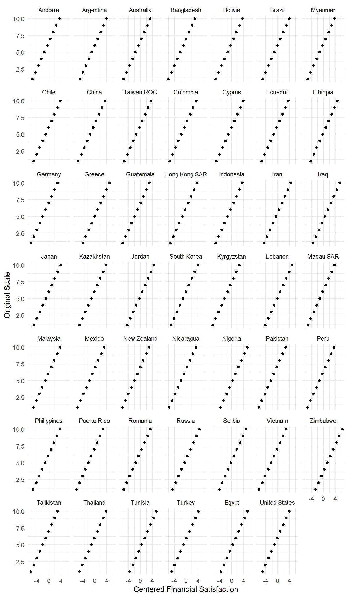

Show the code
# Packages
library(flextable)
library(rio)
library(tidyverse)
library(modelsummary)
library(marginaleffects)
library(broom)
library(parameters)
library(patchwork)# Packages
library(flextable)
library(rio)
library(tidyverse)
library(modelsummary)
library(marginaleffects)
library(broom)
library(parameters)
library(patchwork)Consider the humble regression equation:
\[ y_{i} = b_{0} + (b_{1} * x_{1}) + ... + \epsilon_{i} \]
We predict what value we expect our dependent variable (y) to take on given one or more independent variables ( \(x_{1}, x_{2}\), etc.). However, our predictions are never perfect. The error term ( \(\epsilon_{i}\)) focuses on these differences - how far off is our prediction for a given observation used in fitting the model?
One important point is that we need to make assumptions about the nature and distribution of this error term if we wish to make inferences to the broader population from which we draw our sample. OLS models, for instance, assume that the error term is normally distributed around 0 and is homoskedastic. Another assumption that is relevant for both OLS and logistic regression is the independent errors assumption. Here, we assume that there is no correlation between the residuals of our model (the prediction errors) and the dependent variable - knowing that we make an over-estimate for one observation shouldn’t give us information about whether our prediction error for a different observation is an over- or under-estimate. These assumptions are important because they underlie the calculation fo the standard error and hence our statistical significance tests: if they are seriously violated, then our standard errors will be too small and our significance tests will be biased toward finding “significant” findings.
We can try and address heteroskedasticity in a few ways (e.g., transforming a variable, adding new variables, using robust standard errors as discussed in Chapter 17). The violation of normality is typically considered less of a problem if you have even a moderately sized dataset. What about the independent errors assumption?
The independent errors assumption could be violated in different ways. One threat is omitted variable bias, i.e., failing to include confounding variables in the model. This is a threat you should try and minimize albeit one you will almost certainly not perfectly avoid outside of an experiment. Measurement error could also lead to violations on this front, but you’re likely dealing with pre-made measures (and measurements) so there is likely nothing you could do here. A final threat is clustered or nested data, which refers to situations where you have (repeated) observations sampled from within some broader level of analysis. Examples include:
1 You can probably imagine complex combinations of these different types of data. For instance, if I used data from the European Social Survey from each of its modules, I would have data on individuals clustered within a country within a year (or, a country-year).
The remainder of this document will discuss why this type of data violates the independent errors assumption and discuss some ways to analyze this type of data. The focus will be on geographically clustered data, i.e., individual survey respondents within a given country. However, the same considerations can be applied to other instances of geographical clustering (e.g., individuals sampled from different schools or from within different cities, etc.).
Suppose that I was writing my thesis on the topic of regime satisfaction: why do people vary in how satisfied they are with the way that the political regime works in their country? There are lots of datasets with measures related to regime satisfaction, but perhaps I think that the World Values Survey is the most appropriate for my paper because it alone has a measure of my main independent variable.
The data I’ll work with is a subset of their Wave 7 data wherein individual respondents were sampled within 66 countries or territories across the world. Respondents were asked the following question: “On a scale from1 to 10 where ‘1’ is ‘not satisfied at all’ and ‘10’ is ‘completely satisfied’, how satisfied are you with how the political system is functioning in your country these days?
# Load our data
wvs <- import("./data/wvs_small.rda")
#Some cleaning
wvs <- wvs |>
mutate(
country_name = sjlabelled::as_label(B_COUNTRY))
#A plot
wvs |>
filter(!is.na(Q252)) |>
group_by(Q252) |>
tally() |>
ggplot(aes(x = Q252, y = n)) +
geom_col() +
labs(x = "Regime Satisfaction\n1 = Not Satisfied at All, 10 = Completely Satisfied",
y = "Count") +
scale_x_continuous(breaks = c(1:10)) +
theme_minimal()B_COUNTRY variable indicates which country the respondent is in. It has numeric values with associated labels (e.g, 20 = a person is from Andorra). This nifty command from the sjlabelled package enables me to create a new character variable with those country labels as the data. This is much nicer for subsequent plotting, etc.
Figure 18.1 summarizes the individual level responses to this question pooling across countries. Each bar provides the number of respondents in the survey who gave each response. We can see that there is variation here: there are people who are “completely satisfied” with the way democracy works in their country, people in the middle, and people who are “not satisfied at all”.2 We might think of modeling this variation by considering attributes of the respondents that vary between them. For instance, we could consider whether people with higher levels of education tend to give higher responses on this question than those with less education. Or, we could ask whether there are differences between people who identify with a political party and those that do not, or by ideological extremity, or by political news consumption, and so on, and so on. The unit of analysis would be the individual and the differences explained by things that vary between individuals.
2 Mean = 5.32 , SD = 2.76 .
3 Some type of probability-based sample is used when selecting individual respondents in each country (see the “Fieldwork and Sampling” section here). At the same time, I do think that the WVS uses a probability-based sampling procedure for selecting the countries involved.
The respondents on this survey are not atoms floating freely in space. Rather, the people conducting the survey used some type of sampling procedure to select some people to interview rather than others within particular countries with these countries being a sample of some sort from the broader population of countries in the world.3 We might intuitively think that countries also vary on this measure, i.e., the average level of democratic satisfaction may be higher in some countries than others. Let’s take a look:
#Country Averaegs
country_avgs <- wvs |>
group_by(country_name) |>
summarize(dem_satis = mean(Q252, na.rm = T))
#Plot
ggplot(country_avgs, aes(x = dem_satis)) +
geom_histogram(fill = 'white', color = 'black') +
labs(y = "Mean Democratic Satisfaction within Country",
x = "Regime Satisfaction") +
scale_x_continuous(limits = c(1, 10),
breaks = seq(from = 1, to = 10, by = 1)) +
theme_minimal()Figure 18.2 was constructed by first calculating the average score on the regime satisfaction measure in each country and then plotting the distribution via a histogram. We can see that there is also variation at this level of analysis as well: there is one country with a very low average level of satisfaction (around 2.5), others with rather high (around 8 or so), and countries in the middle.4 We can probably come up with some plausible suspects for things that would predict (and maybe even cause) this variation. Perhaps regime satisfaction is higher when countries are experiencing periods of economic growth, or among countries with lower levels of corruption, or in countries with more accountable governments, etc. A key point here: the source of this variation is something operating at the country-level, i.e., the predictors are things that vary between countries.
4 The country at the lowest end is Brazil with an average of 2.59. The countries at the top are Tajikistan (8.09), Vietnam (7.61), and China (7.55).
We can get a final look at this data via Figure 18.3, which plots the number of respondents within each country giving each response.
wvs |>
filter(!is.na(Q252)) |>
group_by(country_name, Q252) |>
tally() |>
ggplot(aes(x = Q252, y = n)) +
geom_col() +
facet_wrap(~ country_name) +
labs(x = "Regime Satisfaction\n1 = Not Satisfied at All, 10 = Completely Satisfied",
y = "Count") +
scale_x_continuous(breaks = c(1,3,5,7,9)) +
theme_minimal()Here we can perhaps better see that variation is occurring at two levels. Individuals within a country vary in regime satisfaction - some are the high end, some at the low, and others in the middle. Meanwhile, the distributions are not the same across countries - Brazil has many people at 1, China has many people at the high end, and so on.
The average level of regime satisfaction varies across countries. Per above, we can think of country-level attributes that might explain this variation (inequality, economic growth, corruption, etc.). Note that these are things that are a constant for people within a given country - everybody in Andorra is living under the same economic conditions, etc.5 This is where the problem emerges. If we pool all of the individual-level data together into a single model (i.e., include all respondents from every country together in one single model), then the errors for people from a given country will likely be correlated with one another because the responses of these individuals will be influenced by a common causal influence that is not accounted for our in statistical model. We will have a violation of our independence of errors assumption, our errors will be biased downwards, and we may end up reject a “null” hypothesis that we shouldn’t.6
5 Well, in some “objective” sense. People may, and very often do, vary in their subjective experience of these variables. People differ, for instance, on whether they think the economy is “good” or “bad” even though the economy is technically the country’s economy is technically the same for everyone. This could reflect differences in social position and hence exposure to economic pressures, differences in information about economic performance, and perhaps even differences in motivations to perceive the world in attitude-consistent ways (e.g., government supporters could selectively downplay negative information and thereby come to a rosier view of the economy than non-supporters). For relevant reviews on perceptions of regime performance, and potential “biases” in them, see Anderson (2007) and Huber and Malhotra (2013).
6 “A common cause” does not necessarily mean that everyone is reacting in the same way to the country-level stimulus. Rich and poor people could conceivably react very differently to the same level of inequality, for instance. Solt (2008) argues as such in this article on political engagement. People might also vary in how aware they are of a particular stimulus (e.g., the unemployment rate). This is something that could be investigated empirically via the final solution discussed below.
How, then, can we deal with this type of data?
The following sub-sections describe different ways of approaching geographically clustered/nested data. Perhaps the key difference between them is this: at what level are your independent variables being measured? In other words: what is the appropriate level of analysis for your hypothesis? The answer to this question will help inform which path is best suited for your project.
The problem above emerges when we pool observations from clusters together with one another. If your main IV is at the individual level, then a simple solution would be to simply focus on respondents from a single country by filtering out observations from other countries.
For instance, let’s say we hypothesize that regime satisfaction will be positively associated with a person’s financial situation. The WVS asks respondents “how satisfied are you with the financial situation of your household” on a 1 (completely dissatisfied) to 10 (completely satisfied) response scale (variable Q50). Perhaps we are interested in the case of New Zealand in particular. We would first filter out observations from other countries and regress our DV on the IV (along with plausible confounding variables; see Chapter 11). For instance:
# Filter
nz <- wvs |>
filter(country_name == "New Zealand")
#run our model
model_nz <- lm(Q252 ~ Q50, data = nz)
#summary of coefficients
tidy(model_nz)
#predicted values via avg_predictions()
avg_predictions(model_nz, variables = "Q50")predictions() in Statistics II. avg_predictions() does something very similar - it calculates the average predicted value of Y given values of X. The main difference between the two commands concerns how control variables are handled: predictions() holds them at their mean/mode, while avg_predictions() makes predictions for each observations based on that observation’s unique values on the controls and then averages everything up after doing so. If there is only one predictor variable than the two commands converge on the same predicted values with avg_predictions() being a bit simpler to use with continuous variables (it will automatically calculate predictions at the min, 1st quartile, median, 3rd quartile, and maximum of the IV).
# A tibble: 2 × 5
term estimate std.error statistic p.value
<chr> <dbl> <dbl> <dbl> <dbl>
1 (Intercept) 4.61 0.234 19.7 2.40e-73
2 Q50 0.127 0.0317 4.01 6.53e- 5
Q50 Estimate Std. Error z Pr(>|z|) S 2.5 % 97.5 %
1 4.74 0.2035 23.3 <0.001 395.9 4.34 5.14
6 5.37 0.0766 70.2 <0.001 Inf 5.22 5.52
8 5.63 0.0756 74.5 <0.001 Inf 5.48 5.78
9 5.76 0.0931 61.9 <0.001 Inf 5.57 5.94
10 5.88 0.1167 50.4 <0.001 Inf 5.65 6.11
Columns: Q50, estimate, std.error, statistic, p.value, s.value, conf.low, conf.high
Type: response We can see that there is a positive and statistically significant relationship here: regime satisfaction increases by 0.13 scale points, on average, with each one unit change on our financial situation variable. The overall degree of change when moving from minimum to maximum is fairly large: around 1.14 scale points. The SD for the DV in the New Zealand sub-sample is 2.21, so a min to max move is equal to a change of about half of a standard deviation. This seems non-trivial in scale, although note that we’d expect even those with very negative views of their financial situation, as well as those with very positive views of their financial situation, to be around the mid-point on regime satisfaction based on this model (predicted value of 4.74 when satisfaction = 1, 5.88 when it = 10). A politician who could get everybody feeling very positive about their financial situation would be better off than one who couldn’t, but they we’re probably not talking about “put the politician on money” levels of satisfaction.7
7 Maybe this is unfair: the measure is about regime satisfaction, not leader satisfaction.
This approach is very acceptable for your thesis. Its key advantage is analytic simplicity - just filter the data and fit the model you want to fit. Here, you’re just using the WVS, ESS, or whatever clustered data source as a convenient source of data for the country you care about. You would want to motivate the use of that particular source (rather than some other country-specific survey) by indicating why its measurements are particularly suitable for your project.
Of course, there are potential ‘pull’ considerations, i.e., reasons to think about alternatives.
First, this would make sense if the predictor variable you care about is something that varies at the individual level. If the IV you care about is something that varies between clusters/countries (e.g., inequality), then this does not work (unless, perhaps, you can find some type of subjective indicator - e.g., do people’s perception of inequality matter?).
Second, you do have to pick, and motivate the use of, a particular country to focus on and discuss how that decision influences what we learn about your question. In the former case, this could very well be part of the set up of your paper. For instance, if you begin your paper with an anecdote involving former German PM Angela Merkel, then it would seem obvious and non-controversial to use data focused on Germany in particular. You would still want to reflect in the discussion on whether the patterns you saw in the data might “travel” to other contexts (other times within Germany, other places besides) - if so, why do you think that? ; if not, in what ways would things be different and why? But, those are discussions you should be having anyways (see Chapter 6). At the same time, there is some value in having a much more varied set of countries in the analyses as this would speak to such a concern to a certain degree at least in terms of geography.
Here, your main IV varies at the individual level and you want to use all the data before you. The simplest solution is to use “country fixed effects” and “clustered standard errors”.
“Fixed effects” is just a fancy sounding term for: “Include a factor variable for cluster in your model”. The cluster in this example is country (respondents in countries). So, step one would be to convert the variable in the dataset with data on what cluster each observation resides within into a factor variable and include it in the model. I already have this variable factorized (see earlier syntax), so here are the model results:
#run our model
model_all_indiv <- lm(Q252 ~ Q50 + country_name, data = wvs)
#summary of coefficients
tidy(model_all_indiv)# A tibble: 48 × 5
term estimate std.error statistic p.value
<chr> <dbl> <dbl> <dbl> <dbl>
1 (Intercept) 4.59 0.0821 55.9 0
2 Q50 0.182 0.00410 44.3 0
3 country_nameArgentina -0.265 0.110 -2.41 1.60e- 2
4 country_nameAustralia -0.0539 0.0970 -0.556 5.79e- 1
5 country_nameBangladesh 0.907 0.105 8.64 5.76e- 18
6 country_nameBolivia -0.217 0.0949 -2.29 2.23e- 2
7 country_nameBrazil -3.11 0.0977 -31.8 4.15e-220
8 country_nameMyanmar 0.852 0.105 8.12 4.76e- 16
9 country_nameChile -0.220 0.111 -1.98 4.77e- 2
10 country_nameChina 1.79 0.0895 19.9 3.09e- 88
# ℹ 38 more rowsOur main variable of interest is Q50 (financial satisfaction). Here, we can see a positive and statistically significant coefficient for this variable - regime satisfaction tends to increase alongside one’s financial situation. We also get coefficients for the countries in our dataset (e.g., country_nameArgentina, etc.). These compare the average value of the DV in the named country against the common reference group (here, Andorra). Regime satisfaction is lower in Argentina than Andora by -0.265 on average, while being higher in China than Andorra by 1.79 points on average, and so on. Our results thus imply that if we compared people who differed by one unit on the financial situation measure but come from the same country, that we’d expect regime satisfaction to be higher by around 0.182 scale points, on average, among those with the higher financial satisfaction score.
The inclusion of these “fixed effects” essentially control for cluster-level sources of variation…whatever they might be. This accounts for the between-country differences above. However, it does not remove the bias from our standard errors. To fully accomplish this goal, we can use “clustered standard errors” - these are simply standard errors that are calculated in such a way they take into account the internal correlation within countries.
We can obtain the clustered standard errors when we use modelsummary() to create our regression tables. Here is how we can do it.
modelsummary(model_all_indiv,
stars = T,
coef_map = c(
"(Intercept)" = "Intercept",
"Q50" = "Personal Economic Situation"),
vcov = ~country_name,
gof_map = c("nobs", "r.squared", "adj.r.squared", "vcov.type"),
notes = list("Linear regression coefficients with standard errors in parentheses. Standard errors are clustered by country."))modelsummary() to use the clustered standard errors. Specifically, errors should be clustered by the country_name variable.
"vcov.type". This tells the command to include a row at the bottom of the table indicating that SEs are clustered by this variable. This could be omitted provided you indicate in the notes that you are clustering SEs in some way.
| (1) | |
|---|---|
| + p < 0.1, * p < 0.05, ** p < 0.01, *** p < 0.001 | |
| Linear regression coefficients with standard errors in parentheses. Standard errors are clustered by country. | |
| Intercept | 4.586*** |
| (0.094) | |
| Personal Economic Situation | 0.182*** |
| (0.014) | |
| Num.Obs. | 66688 |
| R2 | 0.213 |
| R2 Adj. | 0.212 |
| Std.Errors | by: country_name |
vcov = ~country_nameThis is the one line of syntax you need. You would replace “country_name” with the name of the (factor) variable in your dataset that concerns the relevant cluster.
gof_map = c("nobs", "r.squared", "adj.r.squared", "vcov.type")One note here. There is a new entry: “vcov.type”. The final row of the table above is “Std. Errors” and then “by: country_name”. This option controls whether that information is presented or not. If I omit “vcov.type” from this part of the command, then that line is omitted. That is fine provided that one then indicates in the notes that standard errors are being clustered.
coef_map = c(…)coef_map() is another way of renaming variables in modelsummary(). I am using it here because anything that doesn’t match the contents of this command is excluded from the regression table. In this example, I wanted to exclude all of the country-level fixed effects estimates to avoid creating a super long table. I would recommend doing the same in your paper for the regression table presented in the main body of the text and then provide the full table (with all estimates) in an appendix. Or, alternatively, use a coefficient plot in the main text and then give the full table in an appendix.
One thing to note: the use of these “clustered standard errors” does not change the coefficient estimates - they only change the standard errors. I show this in the following snippet using modelsummary(). Here, I specify that the output should be a “modelsummary_list” - this tells the command to show the underlying data that is to be included in the table rather than the table itself. I then filter the results so that you only see the coefficient for our financial situation variable and its standard error. The coefficients remain the same, while the standard error becomes much larger (0.014 vs. 0.004). This does not matter for statistical significance in the present case - we have lots of data to help us gain precision, but we could see differences in other contexts.
#Without clustering standard errors:
modelsummary(model_all_indiv, output ='modelsummary_list')$tidy |>
select(term, estimate, std.error) |>
slice(2) term estimate std.error
1 Q50 0.1815909 0.004100451#With clustering of standard errors
modelsummary(model_all_indiv, output ='modelsummary_list',
vcov = ~country_name)$tidy |>
select(term, estimate, std.error) |>
slice(2) term estimate std.error
1 Q50 0.1815909 0.01425808We can also incorporate the clustering into our estimates of predicted values and slopes when using predictions() and slopes(). We only need to specify the vcov = option again.
predictions(model_all_indiv,
newdata = datagrid(Q50 = c(1, 5, 6, 8, 10)),
vcov = ~country_name)
Q50 Estimate Std. Error z Pr(>|z|) S 2.5 % 97.5 % country_name
1 5.10 0.07826 65.2 <0.001 Inf 4.95 5.26 Indonesia
5 5.83 0.02122 274.8 <0.001 Inf 5.79 5.87 Indonesia
6 6.01 0.00696 863.3 <0.001 Inf 6.00 6.03 Indonesia
8 6.38 0.02155 295.8 <0.001 Inf 6.33 6.42 Indonesia
10 6.74 0.05007 134.6 <0.001 Inf 6.64 6.84 Indonesia
Columns: rowid, estimate, std.error, statistic, p.value, s.value, conf.low, conf.high, country_name, Q50, Q252
Type: response You would use these procedures when your main IV is at the lower level of variation (e.g., the individual level of analysis) and want to use all of the data. However, what if your cared about variation at the aggregate level? This approach would not let you know about that since you’re subsuming all sources of variation into those country dummy variables. Including country-level variables would introduce multicollinearity. Instead, you’d need other tools. The next two sections are more relevant in those situations.
The preceding examples focus on a situation where the main IV is at the lower level of aggregation - i.e., at the individual level when we have data wherein individuals are nested within countries. If your main IV varies at the higher level of aggregation, e.g., the country level, then the simplest approach is likely to aggregate the data up to that level of analyses and proceed as normal. In other words, find the country-mean for the DV and then use that as the DV in subsequent regression model.
As an example, let’s suppose our argument is that regime satisfaction is predicted by economic conditions. In particular, we might expect that satisfaction will be higher in places with lower levels of unemployment (conversely, it should be lower in places with higher unemployment). The WVS thankfully includes a variable about the unemployment rate in each country (what a coincidence for my example), named unemploytotal. We can see a snippet of the data here - note how the data in the unemploytotal column is the same for all Argentine respondents.
wvs |>
select(country_name, Q252, unemploytotal) |>
na.omit() |>
head() country_name Q252 unemploytotal
1005 Argentina 3 9.79
1006 Argentina 4 9.79
1007 Argentina 5 9.79
1008 Argentina 5 9.79
1009 Argentina 7 9.79
1010 Argentina 10 9.79To prepare our data we’ll use group_by() to calculate the mean value of both variables by country. The unemployment variable is a constant within each country (i.e., all observations in Argentina have the same value [9.79], all observations in China have a value of 4.32, etc.). Taking the mean of this variable is the simplest way of porting over those values to our new dataset.
#Aggregate the data
aggregated <- wvs |>
group_by(country_name) |>
summarize(reg_satis = mean(Q252, na.rm = T),
unemploy = mean(unemploytotal, na.rm = T))
#Take a look
aggregated# A tibble: 48 × 3
country_name reg_satis unemploy
<fct> <dbl> <dbl>
1 Andorra 5.78 NaN
2 Argentina 5.41 9.79
3 Australia 5.74 5.27
4 Bangladesh 6.76 4.19
5 Bolivia 5.55 3.5
6 Brazil 2.59 12.1
7 Myanmar 6.57 1.58
8 Chile 5.48 7.09
9 China 7.55 4.32
10 Taiwan ROC 5.11 NaN
# ℹ 38 more rowsWe could then proceed to examine this data via a scatterplot (since both variables are continuous) to see if our intuitions seem correct:
#Bivariate plot
ggplot(aggregated, aes(x = unemploy, y = reg_satis)) +
geom_point() +
geom_smooth(method = 'lm') +
labs(y = "Mean Regime Satisfaction",
x = "Unemployment (% of total labor force)") +
theme_minimal() +
scale_y_continuous(limits = c(1, 10),
breaks = seq(from = 1, to = 10, by = 1))Indeed, we see a negatively sloped line: regime satisfaction tends to decrease as unemployment increases.
We could then proceed to a regression model.
#Model
model_aggregated <- lm(reg_satis ~ unemploy, data = aggregated)
#Coefficients
tidy(model_aggregated)# A tibble: 2 × 5
term estimate std.error statistic p.value
<chr> <dbl> <dbl> <dbl> <dbl>
1 (Intercept) 5.80 0.314 18.5 4.40e-22
2 unemploy -0.0897 0.0414 -2.16 3.60e- 2We see a negative (and statistically significant) coefficient for unemployment. A 1% increase in the unemployment rate (since this variable is on the % scale) is associated with a drop of country average regime satisfaction of approximately -0.09 scale points. Moving from minimum to maximum is expected to result in a drop of approximately 1.5 scale points (5.73 to 4.25)…although an unemployment rate of 17% or so is pretty anomalous in our data so we get wide confidence intervals. This would represent a pretty large difference given that the DV has a standard deviation of 1.19.
avg_predictions(model_aggregated, variables = "unemploy")
unemploy Estimate Std. Error z Pr(>|z|) S 2.5 % 97.5 %
0.75 5.73 0.288 19.88 <0.001 289.8 5.16 6.29
3.42 5.49 0.211 26.06 <0.001 494.8 5.08 5.90
4.59 5.39 0.188 28.72 <0.001 600.2 5.02 5.75
8.19 5.06 0.190 26.60 <0.001 515.5 4.69 5.44
17.24 4.25 0.485 8.76 <0.001 58.9 3.30 5.20
Columns: unemploy, estimate, std.error, statistic, p.value, s.value, conf.low, conf.high
Type: response The model above only includes one predictor variable. We could (and should) include plausible confounding variable in the model as well. Note though that these are thing that should vary at the country-level. I sometimes see students who go down this path say they’ll include gender, and age, and individual demographics, but that may not make sense. One could aggregate up those variables and include them as well (or, alternatively, use some type of census data to obtain even better estimates of country-level values), but are they actually good confounds? Maybe, maybe not. Countries do not differ all that much in terms of sex/gender distributions (although there is some variation there). They may differ more in overall educational attainment or age patterns, but whether that makes sense to adjust for or not is something you’ll need to consider.
There is a final method for dealing with this type of data: “multilevel” or “mixed” models. The examples above saw us modeling either individual-level variation or country-level variation. A multilevel model enables us to do both things simultaneously in a single model. It can thus subsume the other approaches above. However, I do not recommend that you take this approach given that multilevel models are more complex and you have not been previously trained in their use. The only context in which they would be a better alternative for you is if you are investigating “cross-level interactions”: that is, a situation where you are interesting in examining the interaction between an individual-level variable and a cluster-level variable.
The remainder of this section will walk through how to set one of these models up and some basic interpretation. However, this is only the tip of a deeper iceberg.
We’ll need some extra R libraries for the following example:
library(lme4)
library(lmerTest)
library(performance)
library(parameters)lme4 is the go-to package for fitting multilevel models. However, it does have one drawback: modelsummary() cannot produce statistical significance stars using a model created with this package. I thus also load lmerTest which adds that functionality. The performance package is one you’ve run into before: it helps produce various model performance statistics. Finally, the parameters package is kind of like broom in that it provides some tools for displaying the results of a regression model. I load it because tidy() cannot work with the output of objects created by lmerTest. (Confusing? You bet!)
Our first step is to fit a “null” model wherein the DV is only regressed on a constant.
mixed_null <- lmer(Q252 ~ 1 + (1 | country_name), data = wvs)The syntax here looks kind of similar to the lm() command albeit with lmer rather than lm(). However, there is one very noticeable difference:
(1 | country_name)This tells the command to perform a “random intercept” mixed model with observations nested within country. The intercept, recall, is the value we expect Y to take on when our IVs = 0. In a “random intercept” model, the intercept is allowed to take on different values across clusters. In essence, respondents in each country will have a different intercept value. The model will then average those intercepts together (in essence) as a grand summary. This is the simplest multi-level model we can run. It is also possible to run “random coefficient” versions wherein the coefficient for an IV is also allowed to vary across clusters before being averaged, but that is beyond the scope of this document. If you needed to run one of these models, you’d keep this as is but replace country_name with the name of the variable pertaining to relevant cluster in your analysis ((1 | cluster_name)).
Let’s take a look at the output:
summary(mixed_null)Linear mixed model fit by REML. t-tests use Satterthwaite's method [
lmerModLmerTest]
Formula: Q252 ~ 1 + (1 | country_name)
Data: wvs
REML criterion at convergence: 312216.7
Scaled residuals:
Min 1Q Median 3Q Max
-2.84879 -0.70666 -0.01245 0.66745 2.97927
Random effects:
Groups Name Variance Std.Dev.
country_name (Intercept) 1.408 1.186
Residual 6.182 2.486
Number of obs: 66949, groups: country_name, 47
Fixed effects:
Estimate Std. Error df t value Pr(>|t|)
(Intercept) 5.2410 0.1733 46.0121 30.23 <2e-16 ***
---
Signif. codes: 0 '***' 0.001 '**' 0.01 '*' 0.05 '.' 0.1 ' ' 1The output begins in a somewhat familiar way as lm() with some information about the formula being used in the model and some residuals information, which we can largely ignore. It is then separated into two areas “Random Effects” and “Fixed Effects”. What do these mean? I like the description offered in this resource, which focuses on a scenario in which we are trying to model student test scores from students sampled from within various different schools:
For our purposes of executing and interpreting MLMs, a fixed effect is an average effect across all clusters and a random effect is a variance that describes how much an effect differs across clusters. Generally, fixed effects in MLMs capture the mean of an effect and the random effect captures the variance of an effect. For example, we might have a fixed effect for the intercept that describes average math achievement across all schools. Then we have a random effect that describes how intercepts for math achievement vary across schools. Together, the fixed and random effect describe math achievement scores across schools.
In our example, the Intercept value in the Fixed Effects area is an estimate of the average regime satisfaction across all countries. If we take the average in each country and then average together those country averages, this is more or less what we’ll get. We previously found the average within each country; here is the average of those averages, which is right in line with the Intercept above.
mean(aggregated$reg_satis, na.rm = T)[1] 5.240866What then do the values in the Random Effects tell us? We see two rows here: one for “country_name” and one for “Residual”. The value in the “country_name” value tell us about the degree of variation in the country-averages for regime satisfaction. Here, for instance, is the standard deviation of the country-averages that we calculated earlier, which is again in line with the value in the Random effects area:
sd(aggregated$reg_satis, na.rm = T)[1] 1.188207The value for Residual, meanwhile, tells us about the variance/standard deviation of individuals around their country mean regime satisfaction. A multi-level model essentially “partitions” the variance in a DV into two “levels”: variance at level 1 owing to the lowest level of the model (here: individuals) and variance at level 2 owing to the higher level of aggregation (here: countries).8 We can then model this variation by including predictors measured at either level as we’ll see in the next sub-section.
8 Well, in a two-level model. These types of models can be made more complex.
We can get a sense of how much of the variance in our DV varies at each level via the icc() command from the performance package:
icc(mixed_null)# Intraclass Correlation Coefficient
Adjusted ICC: 0.185
Unadjusted ICC: 0.185The value here is 0.185. In essence, this tells us the proportion of the total variance in the DV that occurs at the cluster level. We can think of this as telling us about the degree of similarity between respondents within the same country. The value of 0.185 indicates that around 18.5% of the total variance in the regime satisfaction DV is attributable to differences between countries (i.e., ~18.5% of the variance occurs at the country-level). That means that 0.815 or 81.5% occurs at the individual level. There is more variance between individuals than between countries. As a side note, if the ICC was very very low, then that might be an indicator that we shouldn’t bother with this multi-level model business - a simpler fixed effects model focused on individual level predictors would likely be a better idea since there wouldn’t be much cluster level variance to explain in the first place.
We can add predictor variables much as we do with an lm() or glm() model. Here, I’ll perform three models: (1) one that only includes the individual level predictor (financial situation); (2) one that only includes the country level predictor (unemployment); and then one that includes both at once (for a later discussion).
# Only individual
mixed_indiv <- lmer(Q252 ~ Q50 + (1 | country_name), data = wvs)
#Only aggregate
mixed_agg <- lmer(Q252 ~ unemploytotal + (1 | country_name), data = wvs)
#Both
mixed_both <- lmer(Q252 ~ Q50 + unemploytotal + (1 | country_name), data = wvs)Our interpretations of the coefficients from these models is basically the same as with an lm() model. The intercept tells us the expected average value when the predictor variable(s) = 0, while coefficients tell us about the slope of a line (continuous variable) or about a difference in means between categories (binary/categorical variables).
Let’s take a look at the individual-level model first. I’ll focus on the output from parameters() as this will get rid of the scientific notation that summary() would use when showing the coefficients in this particular example:
# Via Summary
summary(mixed_indiv)Linear mixed model fit by REML. t-tests use Satterthwaite's method [
lmerModLmerTest]
Formula: Q252 ~ Q50 + (1 | country_name)
Data: wvs
REML criterion at convergence: 309059.7
Scaled residuals:
Min 1Q Median 3Q Max
-3.1048 -0.7375 0.0226 0.6872 3.4004
Random effects:
Groups Name Variance Std.Dev.
country_name (Intercept) 1.273 1.128
Residual 6.004 2.450
Number of obs: 66688, groups: country_name, 47
Fixed effects:
Estimate Std. Error df t value Pr(>|t|)
(Intercept) 4.120e+00 1.668e-01 4.820e+01 24.70 <2e-16 ***
Q50 1.818e-01 4.100e-03 6.668e+04 44.34 <2e-16 ***
---
Signif. codes: 0 '***' 0.001 '**' 0.01 '*' 0.05 '.' 0.1 ' ' 1
Correlation of Fixed Effects:
(Intr)
Q50 -0.152#Via parameters::parameters()
parameters(mixed_indiv)# Fixed Effects
Parameter | Coefficient | SE | 95% CI | t(66684) | p
-----------------------------------------------------------------------
(Intercept) | 4.12 | 0.17 | [3.79, 4.45] | 24.70 | < .001
Q50 | 0.18 | 4.10e-03 | [0.17, 0.19] | 44.34 | < .001
# Random Effects
Parameter | Coefficient
------------------------------------------
SD (Intercept: country_name) | 1.13
SD (Residual) | 2.45
Uncertainty intervals (equal-tailed) and p-values (two-tailed) computed
using a Wald t-distribution approximation.The intercept is 4.12. This tells us the following: the average regime satisfaction cross all countries when the financial situation variable = 0. The intercept is generally not very interesting and especially so in this case given that our IV cannot even taken on a value of 0 (since it ranges from 1 to 10). The coefficient for Q50 is more relevant. It is 0.18. We would interpret this as telling us that each one unit increase in subjective financial situation is associated with an average increase in regime satisfaction of around 0.18 scale points. People who are more financially satisfied are also more satisfied with their regime. This relationship is statistically significant as well (p < 0.001).
We can get a sense of how important this change is via the predictions() command from the margnialeffects package. (Note: you can ignore the Warning message.)
predictions(mixed_indiv, newdata = datagrid(Q50 = c(1, 3, 5, 7, 9, 10)))Warning: For this model type, `marginaleffects` only takes into account the
uncertainty in fixed-effect parameters. You can use the `re.form=NA`
argument to acknowledge this explicitly and silence this warning.
Q50 Estimate Std. Error z Pr(>|z|) S 2.5 % 97.5 % country_name
1 5.10 0.166 30.7 <0.001 684.8 4.78 5.43 Indonesia
3 5.47 0.165 33.0 <0.001 793.1 5.14 5.79 Indonesia
5 5.83 0.165 35.3 <0.001 906.3 5.51 6.15 Indonesia
7 6.19 0.165 37.6 <0.001 Inf 5.87 6.52 Indonesia
9 6.56 0.165 39.7 <0.001 Inf 6.23 6.88 Indonesia
10 6.74 0.166 40.7 <0.001 Inf 6.41 7.06 Indonesia
Columns: rowid, estimate, std.error, statistic, p.value, s.value, conf.low, conf.high, country_name, Q50, Q252
Type: response What about the stuff in the Random effects area? The entry for “country_name” still tells us about the variation in the country means. This value is unchanged from above because we have not added any country-level predictor variables. The entry for Residual still tells us about individual-level variation around country-means. This value is slightly smaller than earlier because we have added a predictor variable that explains some of the total variation at the individual level.
Let’s turn to the country-level model:
summary(mixed_agg)Linear mixed model fit by REML. t-tests use Satterthwaite's method [
lmerModLmerTest]
Formula: Q252 ~ unemploytotal + (1 | country_name)
Data: wvs
REML criterion at convergence: 302394.5
Scaled residuals:
Min 1Q Median 3Q Max
-2.83604 -0.70387 -0.01185 0.66439 2.96728
Random effects:
Groups Name Variance Std.Dev.
country_name (Intercept) 1.351 1.162
Residual 6.234 2.497
Number of obs: 64727, groups: country_name, 45
Fixed effects:
Estimate Std. Error df t value Pr(>|t|)
(Intercept) 5.79713 0.31358 43.00928 18.487 <2e-16 ***
unemploytotal -0.08967 0.04143 43.02262 -2.164 0.036 *
---
Signif. codes: 0 '***' 0.001 '**' 0.01 '*' 0.05 '.' 0.1 ' ' 1
Correlation of Fixed Effects:
(Intr)
unemployttl -0.833The Intercept here tells us the expected mean level of our dependent variable when the IV = 0, i.e., if unemployment = 0%, then we’d expect to observe the country-level average of regime satisfaction to be about 5.8. Meanwhile, a 1 unit (1% in this instance) increase in the unemployment rate is associated with a decrease of approximately -0.09 scale points on the DV.
predictions(mixed_agg, newdata = datagrid(unemploytotal = c(1:10)))Warning: For this model type, `marginaleffects` only takes into account the
uncertainty in fixed-effect parameters. You can use the `re.form=NA`
argument to acknowledge this explicitly and silence this warning.
unemploytotal Estimate Std. Error z Pr(>|z|) S 2.5 % 97.5 %
1 6.43 0.280 23.0 <0.001 385.8 5.89 6.98
2 6.35 0.249 25.5 <0.001 474.0 5.86 6.83
3 6.26 0.221 28.3 <0.001 582.8 5.82 6.69
4 6.17 0.198 31.1 <0.001 704.2 5.78 6.55
5 6.08 0.182 33.4 <0.001 811.3 5.72 6.43
6 5.99 0.174 34.4 <0.001 859.0 5.65 6.33
7 5.90 0.176 33.5 <0.001 815.5 5.55 6.24
8 5.81 0.187 31.0 <0.001 699.0 5.44 6.17
9 5.72 0.206 27.7 <0.001 558.6 5.31 6.12
10 5.63 0.231 24.3 <0.001 431.3 5.17 6.08
country_name
Indonesia
Indonesia
Indonesia
Indonesia
Indonesia
Indonesia
Indonesia
Indonesia
Indonesia
Indonesia
Columns: rowid, estimate, std.error, statistic, p.value, s.value, conf.low, conf.high, country_name, unemploytotal, Q252
Type: response The coefficient for the country-level variable is smaller than the individual-level variable. We should perhaps be cautious about saying it is “less important” however. The degree of variation at the individual level is much larger than the amount of variation at the country-level as we saw from the Random effects estimates from the null model:
#Uses the parameters() command and some filtering to focus
#our attention on the random effects
parameters(mixed_null) |>
filter(Parameter != "(Intercept)")# Random Effects
Parameter | Coefficient | 95% CI
---------------------------------------------------
SD (Intercept: country_name) | 1.19 |
SD (Residual) | 2.49 | A smaller looking change might be more “meaningful” if there is less variance to explain the first place. One way of seeing this is to consider the standardized coefficients from the two models:
#Individual
standardise_parameters(mixed_indiv)# Standardization method: refit
Parameter | Std. Coef. | 95% CI
----------------------------------------
(Intercept) | -0.03 | [-0.14, 0.09]
Q50 | 0.16 | [ 0.15, 0.17]#Country
standardise_parameters(mixed_agg)# Standardization method: refit
Parameter | Std. Coef. | 95% CI
-------------------------------------------
(Intercept) | -0.02 | [-0.15, 0.10]
unemploytotal | -0.13 | [-0.25, -0.01]Perhaps the important thing here to interpret the coefficients in relation to their level of analysis (e.g., individual level predictors explaining differences between individuals, country-level predictors explaining differences between countries).
Let’s compare our results to those from the earlier models (individual level fixed effect with clustered standard errors and the aggregated model).
#See the chapter on 'regression table formatting suggesion'
#for an explanation of the flextable code
#List
model_comps <- list(
"Indiv w/FE" = model_all_indiv,
"Aggregated" = model_aggregated,
"Multi-level" = mixed_indiv,
"Multi-Level" = mixed_agg,
"Multi-Level" = mixed_both)
#Table with some flextable formatting
model_comps_table <- modelsummary(model_comps,
estimate = "{estimate}{stars}\n{std.error}",
statistic = NULL,
gof_map = c("nobs", "r.squared", "adj.r.squared",
"r2.marginal", "r2.conditional"),
vcov = c(~ country_name, "classical", "classical",
"classical", "classical"),
coef_map = c(
"(Intercept)" = "Intercept",
"Q50" = "Personal Financial Situation",
"unemploy" = "Country Unemployment Rate",
"unemploytotal" = "Country Unemployment Rate"),
notes = list("Notes: OLS or multi-level model coefficients with SEs in parentheses. Country fixed effect estimates omitted from FE model. FE model clusters SEs by country.",
"* p < 0.05; ** p < 0.01; *** p < 0.001"),
output = 'flextable')
model_comps_table |>
hline(i = nrow_part(model_comps_table) - 3) |>
align(i = 1:nrow_part(model_comps_table), j = 2:ncol_keys(model_comps_table), align = 'center') |>
align(align = 'center', part = 'header') |>
autofit()
| Indiv w/FE | Aggregated | Multi-level | Multi-Level | Multi-Level |
|---|---|---|---|---|---|
Intercept | 4.586*** | 5.797*** | 4.120*** | 5.797*** | 4.581*** |
Personal Financial Situation | 0.182*** | 0.182*** | 0.182*** | ||
Country Unemployment Rate | -0.090* | -0.090* | -0.074+ | ||
Num.Obs. | 66688 | 45 | 66688 | 64727 | 64467 |
R2 | 0.213 | 0.098 | |||
R2 Adj. | 0.212 | 0.077 | |||
R2 Marg. | 0.026 | 0.017 | 0.043 | ||
R2 Cond. | 0.197 | 0.192 | 0.207 | ||
Notes: OLS or multi-level model coefficients with SEs in parentheses. Country fixed effect estimates omitted from FE model. FE model clusters SEs by country. | |||||
* p < 0.05; ** p < 0.01; *** p < 0.001 | |||||
A few things may stand out here. First, the coefficient for “Personal Financial Situation” is the same in all models in which it appears. This is because fitting a random intercept multi-level model is basically equivalent to fitting a simpler linear regression model with country dummy variables. The random intercept multi-level model allows the intercept to be “random’ (i.e., to take on a different value for each cluster) while still estimating a common (or”fixed”) estimate for the independent variables.9 We can see this by using the coef() command, which will return the coefficients for the Intercept and for the independent variable(s):
9 That is, unless we also specify that the coefficient for an IV should be allowed to vary between clusters before being summarized into a single weighted estimate.
# Different intercept, same slope
coef(mixed_indiv)$country_name
(Intercept) Q50
Andorra 4.582194 0.1817805
Argentina 4.318242 0.1817805
Australia 4.529366 0.1817805
Bangladesh 5.485730 0.1817805
Bolivia 4.366886 0.1817805
Brazil 1.486339 0.1817805
Myanmar 5.431446 0.1817805
Chile 4.362747 0.1817805
China 6.366356 0.1817805
Taiwan ROC 3.948085 0.1817805
Colombia 2.608765 0.1817805
Cyprus 4.020333 0.1817805
Ecuador 4.079620 0.1817805
Ethiopia 3.762728 0.1817805
Germany 5.054844 0.1817805
Greece 3.249699 0.1817805
Guatemala 2.660598 0.1817805
Hong Kong SAR 3.945368 0.1817805
Indonesia 4.920654 0.1817805
Iran 4.597352 0.1817805
Iraq 2.791373 0.1817805
Japan 4.500479 0.1817805
Kazakhstan 5.195977 0.1817805
Jordan 4.433007 0.1817805
South Korea 5.673280 0.1817805
Kyrgyzstan 3.717767 0.1817805
Lebanon 2.931462 0.1817805
Macau SAR 4.411652 0.1817805
Malaysia 4.247233 0.1817805
Mexico 3.162958 0.1817805
New Zealand 4.226980 0.1817805
Nicaragua 3.626962 0.1817805
Nigeria 3.407309 0.1817805
Pakistan 5.101552 0.1817805
Peru 2.631667 0.1817805
Philippines 5.199632 0.1817805
Puerto Rico 2.202826 0.1817805
Romania 2.923390 0.1817805
Russia 4.411431 0.1817805
Serbia 3.567437 0.1817805
Vietnam 6.298000 0.1817805
Zimbabwe 2.930848 0.1817805
Tajikistan 6.789928 0.1817805
Thailand 4.367818 0.1817805
Tunisia 2.853026 0.1817805
Turkey 4.965436 0.1817805
United States 3.284655 0.1817805
attr(,"class")
[1] "coef.mer"The main advantage of the multi-level model is also enabling us to model variation at the country level including the estimation of interactions between levels of analysis (if that is what we want to do).
Second, the coefficient for Country Unemployment Rate is also the same in the Aggregated Model and Multi-Level model where it is the only predictor. Again, this is because the two models are doing the same thing: using variation in country-level unemployment to predict country-level average regime satisfaction. The coefficient for this variable is not the same in the final model, for reasons I’ll discuss in a subsequent sub-section.
Third, we get different types of R2 for the multi-level models: R2 Marg. (marginal R2) and R2 Cond. (conditional R2). Calculating an R2 for a multi-level model is not straightforward (much as it wasn’t for logistic models) but these are attempts to do so anyways. The “marginal” version only takes into account the influence of the “fixed effects” portion of the model, while the “conditional” version takes into account both fixed and random effects. Their interpretation is not very straightforward, but higher is typically “better” (caveats about model specification aside).
One thing that changed in Table 18.1 was the coefficient for Country Unemployment rate when we switched from a single-variable model (whether OLS or multi-level) to one that includes both that variable and the one with an individual-level predictor (Personal Financial Situation). What is going on there?
Consider these two variables: Personal Financial Situation and Country Unemployment Rate. Both variables pertain to economic conditions in a country. Perhaps more importantly, it seems very plausible that changes in a country’s unemployment rate could impact a person’s (subjective) financial situation. We could perhaps think of the individual measure as being somewhat ‘downstream’ or ‘post-treatment’ of the country level measure!
One way to see this is to look at the relationship between country unemployment rate and country average scores for personal financial situation. Figure 18.5 does just this with a negative relationship emerging: people are, on average, less satisfied with their personal financial situation in places with more unemployment.
#Get the aggregated data
econ_data <- wvs |>
group_by(country_name) |>
summarize(personal = mean(Q50, na.rm = T),
country = mean(unemploytotal, na.rm =T))
#Correlation between them using the correlation package
econ_corr <- correlation::correlation(econ_data)
#Plot
ggplot(econ_data, aes(x = country, y = personal)) +
geom_point() +
geom_smooth(method = 'lm') +
labs(x = "Country Unemployment Rate",
y = "Country Average Personal Financial Situation") +
theme_minimal() +
scale_y_continuous(limits = c(1,10),
breaks = c(1:10)) +
geom_text(x = 3,
y = 8,
label = paste("Correlation =",
round(econ_corr[1,3],2),
sep = " "))This brings us to the subject of this sub-section: to “center” or not to “center”. Centering simply means subtracting a constant value from each observation.10 One way we could center our data is by subtracting a variable’s mean score from each observation - this is called “grand mean centering”. A different type of centering is perhaps more common and useful in the context of a multi-level: subtracting the cluster mean from each observation within that cluster. For instance, finding the mean among all respondents in Spain (for instance) and subracting that value from the score from each individual Spanish respondent (and so on for the other countries). This can be useful in a multi-level model. Variation on the centered individual-level variable can only represent within-cluster variation on that variable.
10 You may remember this as part of standardizing a variable wherein we subtract the mean from each observation and then divide by the variable’s standard deviation. In so doing we create a variable with a mean of 0 and a standard deviation of 1.
Here is how we can do this in the present instance by using group_by():
#Center the variable within country
wvs <- wvs |>
group_by(country_name) |>
mutate(personal_country_mean = mean(Q50, na.rm = T)) |>
ungroup() |>
mutate(personal_center = Q50 - personal_country_mean)ungroup() bit here is important as following group_by() with mutate() can lead to some issues down the line if you don’t then ungroup() the data.
Let’s compare the original variable to the centered one:
wvs |>
select(Q50, personal_center) |>
psych::describe() vars n mean sd median trimmed mad min max range
Q50 1 69238 6.17 2.45 6.00 6.28 2.97 1.00 10.00 9.00
personal_center 2 69238 0.00 2.32 0.03 0.09 2.30 -6.48 6.36 12.83
skew kurtosis se
Q50 -0.32 -0.54 0.01
personal_center -0.30 -0.29 0.01Centering the variable has not meaningfully affected its variance (the standard deviations are basically the same). It has basically just shifted people over so that they vary around a mean of 0.
ggplot(wvs, aes(x = personal_center, y =Q50)) +
geom_point() +
facet_wrap(~ country_name) +
labs(x = "Centered Financial Satisfaction",
y = "Original Scale") +
theme_minimal()
Let’s see how this affects our results:
#Fit model with centered variable
mixed_both_center <- lmer(Q252 ~ personal_center + unemploytotal +
(1 | country_name), data = wvs)
#Table
#List
model_comps1 <- list(
"Indiv w/FE" = model_all_indiv,
"Aggregated" = model_aggregated,
"Multi-level" = mixed_indiv,
"Multi-Level" = mixed_agg,
"Multi-Level" = mixed_both,
"Multi-Level" = mixed_both_center)
#Table with some flextable formatting
model_comps_table1 <- modelsummary(model_comps1,
estimate = "{estimate}{stars}\n{std.error}",
statistic = NULL,
gof_map = c("nobs", "r.squared", "adj.r.squared",
"r2.marginal", "r2.conditional"),
vcov = c(~ country_name, "classical", "classical",
"classical", "classical", "classical"),
coef_map = c(
"(Intercept)" = "Intercept",
"Q50" = "Personal Financial Situation",
"personal_center" = "Personal Financial Situation (Centered)",
"unemploy" = "Country Unemployment Rate",
"unemploytotal" = "Country Unemployment Rate"),
notes = list("Notes: OLS or multi-level model coefficients with SEs in parentheses. Country fixed effect estimates omitted from FE model. Clustered standard errors not taken into account in the first model.",
"* p < 0.05; ** p < 0.01; *** p < 0.001"),
output = 'flextable')
model_comps_table1 |>
hline(i = nrow_part(model_comps_table1) - 3) |>
align(i = 1:nrow_part(model_comps_table1), j = 2:ncol_keys(model_comps_table1), align = 'center') |>
align(align = 'center', part = 'header') |>
autofit()
| Indiv w/FE | Aggregated | Multi-level | Multi-Level | Multi-Level | Multi-Level |
|---|---|---|---|---|---|---|
Intercept | 4.586*** | 5.797*** | 4.120*** | 5.797*** | 4.581*** | 5.797*** |
Personal Financial Situation | 0.182*** | 0.182*** | 0.182*** | |||
Personal Financial Situation (Centered) | 0.182*** | |||||
Country Unemployment Rate | -0.090* | -0.090* | -0.074+ | -0.090* | ||
Num.Obs. | 66688 | 45 | 66688 | 64727 | 64467 | 64467 |
R2 | 0.213 | 0.098 | ||||
R2 Adj. | 0.212 | 0.077 | ||||
R2 Marg. | 0.026 | 0.017 | 0.043 | 0.040 | ||
R2 Cond. | 0.197 | 0.192 | 0.207 | 0.215 | ||
Notes: OLS or multi-level model coefficients with SEs in parentheses. Country fixed effect estimates omitted from FE model. Clustered standard errors not taken into account in the first model. | ||||||
* p < 0.05; ** p < 0.01; *** p < 0.001 | ||||||
We now get our original estimates back!
Should you center a lower-level variable like this if you run a multi-level variable? This would make most sense to me if the lower-level variable is continuous in nature and there is a plausible case that the lower level variable is being affected by the higher order one.
I began this broader section by recommend that you not use a multi-level model unless you want to examine an interaction between a variable measured at one level of analysis and a variable measured at another. In this example, for instance, you might want to examine whether the relationship between personal financial situation and the DV varies based on country context (e.g., maybe it’s bigger when unemployment is high vs. low?). Alternatively, we might want to know whether the effects of unemployment vary based on individual level financial conditions. If that is the type of analysis that your hypothesis is setting up, then a multi-level model is most appropriate.11
11 We could try fitting an lm() here with our two variables, their interaction term, and country fixed effects. However, this introduces some severe multicollinearity that can only be avoided by dropping a country-observation. In this example, for instance, R decided to drop observations from the United States in order to estimate the model. Another alternative would be to fit a model with just individual level variables (including the IV we care about) on each country separately, store the coefficient for the IV that we care about from each regression, and then use that as the DV in a subsequent model using country-level predictor variables. This is perhaps simpler in terms of final interpretation since the end result would be a common OLS linear regression, but more effort to set up.
12 There is one element of the summary() output that I did not discuss: the “Correlation of Fixed Effects” stuff. I generally wouldn’t worry too much about that. This website goes into what it means in more depth.
We include an interaction term in the model in the same way that we do so with lm() or glm() models, via a *. I will use the centered version of the personal finance variable in this example. Here are the results using both summary() and parameters() since the latter will show won’t use scientific notation in this example (well, except for the very small interaction term!).12
#Mixed Model with interaction
mixed_interaction <- lmer(Q252 ~ personal_center*unemploytotal +
(1 | country_name), data = wvs)
#Results
summary(mixed_interaction)Linear mixed model fit by REML. t-tests use Satterthwaite's method [
lmerModLmerTest]
Formula: Q252 ~ personal_center * unemploytotal + (1 | country_name)
Data: wvs
REML criterion at convergence: 299319.2
Scaled residuals:
Min 1Q Median 3Q Max
-3.1010 -0.7391 0.0229 0.6926 3.4080
Random effects:
Groups Name Variance Std.Dev.
country_name (Intercept) 1.350 1.162
Residual 6.054 2.461
Number of obs: 64467, groups: country_name, 45
Fixed effects:
Estimate Std. Error df t value Pr(>|t|)
(Intercept) 5.797e+00 3.135e-01 4.301e+01 18.491 <2e-16
personal_center 1.711e-01 7.699e-03 6.442e+04 22.229 <2e-16
unemploytotal -8.974e-02 4.142e-02 4.302e+01 -2.167 0.0358
personal_center:unemploytotal 1.724e-03 1.047e-03 6.442e+04 1.646 0.0998
(Intercept) ***
personal_center ***
unemploytotal *
personal_center:unemploytotal .
---
Signif. codes: 0 '***' 0.001 '**' 0.01 '*' 0.05 '.' 0.1 ' ' 1
Correlation of Fixed Effects:
(Intr) prsnl_ unmply
persnl_cntr 0.000
unemployttl -0.833 0.000
prsnl_cntr: 0.000 -0.840 0.000parameters(mixed_interaction)# Fixed Effects
Parameter | Coefficient | SE | 95% CI | t(64461) | p
---------------------------------------------------------------------------------------------
(Intercept) | 5.80 | 0.31 | [ 5.18, 6.41] | 18.49 | < .001
personal center | 0.17 | 7.70e-03 | [ 0.16, 0.19] | 22.23 | < .001
unemploytotal | -0.09 | 0.04 | [-0.17, -0.01] | -2.17 | 0.030
personal center × unemploytotal | 1.72e-03 | 1.05e-03 | [ 0.00, 0.00] | 1.65 | 0.100
# Random Effects
Parameter | Coefficient
------------------------------------------
SD (Intercept: country_name) | 1.16
SD (Residual) | 2.46
Uncertainty intervals (equal-tailed) and p-values (two-tailed) computed
using a Wald t-distribution approximation.Here is a reminder about how to read coefficients in an interaction:
personal_center: This tells us the estimated relationship between the personal financial situation variable and the DV when unemployment = 0. If we could observe countries where unemployment = 0, then we’d expect regime satisfaction to increase by 0.17 scale points, on average, for each one unit increase in financial situation. We do not observe any such countries, so we should be a bit careful about simply relying on this coefficient to interpret the model.unemploytotal: We centered the financial situation variable such that 0 = country mean. A one unit increase in unemployment when personal financial situation is at the mean level within a country is around -0.09 (so, increasing unemployment = decreasing average regime satisfaction).unemploytotal is negative but the interaction term is positive. So, unemployment seems to matter less for those with more financial security…but again, not statistically significant.As always with interactions we should turn to predicted values or slope estimates to actually make sense of these results (with graphs of these values being an especially good idea):
# The syntax below uses some R syntax that is a little bit more advanced
# than taught in Statistics I and II. Basically, I'm storing the values
# I want to make predictions form in a data object and then
# directly accessing those values in other syntax calls, instead of writing them
# down and then manually entering them.
##Finding 1 SD < mean, mean, 1 SD > mean for the two variables
#Uses psych::describe to create a dataframe with the mean and sd
mean_data <- wvs |>
select(personal_center, unemploytotal) |>
psych::describe()
# I use some base R notation here (the [] stuff) to pass the
#values from the mean_data df into a vector.
# The first number in brackets is the row number for an observation and the second is the column number. So, [1,3] means: get me the value in row 1, column 3.
# I could do all of this manually as well, e.g., unemploy_sdbelow <- 6.22 - 4.07, etc., but I want to get on with it! See the R book on interactions for doing this manually
personal_values <- c(mean_data[1,3] - mean_data[1,4], # mean - sd
mean_data[1,3], #mean,
mean_data[1,3] + mean_data[1,4]) #mean + sd
unemploy_values <- c(mean_data[2,3] - mean_data[2,4], #mean + sd
mean_data[2,3], #mean,
mean_data[2,3] + mean_data[2,4]) #mean + sd
## Predicted Values
# Personal by Country
#Also uses some base R stuff to simplify getting min to max values for
#unemployment.
plot1 <- predictions(mixed_interaction,
newdata = datagrid(personal_center = c(-6:6),
unemploytotal = unemploy_values)) |>
mutate(unemploytotal = factor(unemploytotal,
labels = c("1 SD < Mean",
"Mean",
"1 SD > Mean"))) |>
ggplot(aes(x = personal_center, y = estimate, linetype = unemploytotal)) +
geom_line() +
geom_ribbon(aes(ymin = conf.low, ymax = conf.high), alpha = 0.2) +
labs(x = "(Centered) Personal Financial Situation",
y = "Predicted Value",
linetype = "Country Unemployment") +
theme_bw() +
theme(legend.position = "bottom") +
guides(linetype = guide_legend(nrow = 2))
# Country by Personal
plot2 <- predictions(mixed_interaction,
newdata = datagrid(personal_center = personal_values,
unemploytotal = mean_data[2,8]:mean_data[2,9])) |>
mutate(personal_center = factor(personal_center,
labels = c("1 SD < Mean",
"Mean",
"1 SD > Mean"))) |>
ggplot(aes(x = unemploytotal, y = estimate, linetype = personal_center)) +
geom_line() +
geom_ribbon(aes(ymin = conf.low, ymax = conf.high), alpha = 0.2) +
labs(x = "Country Unemployment Rate",
y = "Predicted Value",
linetype = "Personal Financial") +
theme_bw() +
theme(legend.position = "bottom") +
guides(linetype = guide_legend(nrow = 2))
##Slopes
plot3 <- avg_slopes(mixed_interaction,
variables = "personal_center",
by = "unemploytotal") |>
ggplot(aes(x = unemploytotal, y = estimate)) +
geom_line() +
geom_ribbon(aes(ymin = conf.low, ymax = conf.high),
alpha = 0.2) +
geom_hline(yintercept = 0, linetype = 'dashed', color = 'red') +
labs(x = "Country Unemployment",
y = "AME for Personal Financial Situation") +
theme_bw()
plot4 <- avg_slopes(mixed_interaction,
variables = "unemploytotal",
by = "personal_center") |>
ggplot(aes(x = personal_center, y = estimate)) +
geom_line() +
geom_ribbon(aes(ymin = conf.low, ymax = conf.high),
alpha = 0.2) +
geom_hline(yintercept = 0, linetype = 'dashed', color = 'red') +
labs(x = "(Centered) Personal Financial Situation",
y = "AME for Country Unemployment") +
theme_bw()
#Combining
plot3 + plot4 + plot1 + plot2The top part of Figure 18.6 show the average marginal effect of personal financial situation by unemployment (left) or unemployment by personal financial situation (right). We can see that the effect of a person’s personal financial situation is expected to increase in size as we move from countries with less to countries with more unemployment…but the change is quite wee. Likewise, we the effect of country unemployment is more negative among those with very poor financial situations (e.g., around -4 or -5) than among those with better ones (e.g., around 4 or 5)…but the change in effect is very wee and there is a lot of uncertainty here. This is brought home further by the predicted values plots on the bottom where we get nearly parallel lines. It would be hard to see these results and say that macro and micro economic conditions interact!
We can use some of our same old toosl to check assumptions for a linear mixed model (e.g., resid_panel() and car::vif()), although car::avPlots() will not work. You can find a walk through of how to check assumptions for these types of models via this helpful guide.
The discussions above focus on situations where our DV is (assumed to be) continuous (interval/ratio) in nature. What about if our DV is binary? The same basic considerations apply: